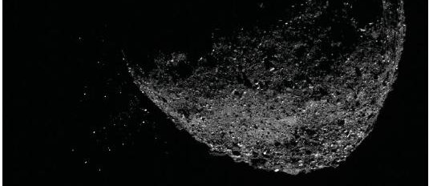

We’re All Gonna Die?
Asteroid
Asteroids are small rocky bodies primarily in orbit between Jupiter and Mars (i.e. main-belt).
Those observed range in diameter from 948 km (1 Ceres) to a few meters. Near-Earth asteroids
(NEAs) are a subset of asteroids whose orbits approach and/or cross the Earth's orbit.
Please visit our sister-site dedicated to near-Earth objects (NEOs) for more information on NEAs.
Asteroids are rocky fragments left over from the formation of the solar system about 4.6 billion years ago.
Most asteroids orbit the sun in a belt between Mars and Jupiter. Scientists think there are probably millions
of asteroids, ranging widely in size from hundreds of kilometers across to less than one kilometer (a little
more than one-half mile) wide.
Occasionally, asteroids' orbital paths are influenced by the gravitational tug of planets, which cause their
paths to alter. Scientists believe stray asteroids or fragments from earlier collisions have slammed into Earth
in the past, playing a major role in the evolution of our planet.